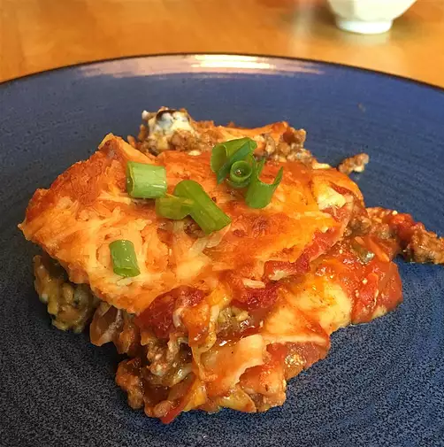

Taco Lasagna recipe

Description:
In this section I will show you a recipe,
where we mix tacos and lasagna to taco-lasagna. Yummy.
You will need the following ingredients:
- 2 pounds lean ground beef
- 1.25 ounce packages taco seasoning mix
- 4 cloves garlic, minced
- 0.5 teaspoon cayenne pepper
- 1 tablespoon chili powder
- 0.5 cup water
- 18 (6 inch) corn tortillas
- 1 (24 ounce) jar salsa
- 1 cup sliced green onion
- 1 (16 ounce) container sour cream
- 1.5 cups shredded Cheddar sauce
- 1.5 cups shredded Monterey Jack cheese
Follow the following steps to make yourself happy:
- Place ground beef in a large, deep skillet. Cook over
medium high heat until evenly brown. Drain, then season with taco
seasoning, garlic, cayenne pepper, chili powder and water. Simmer for 10 minutes.
- Preheat oven to 190 degrees C. Grease the bottom of a 9x13 inch baking dish.
- Place 6 torillas into the prepared baking dish. Spread 1/3 of the salsa on top of the tortillas.
Spread 1/2 of the meat mixture evenly over the salsa. Sprinkle with 1/2 of the green onions. Drop
1/2 of the sour cream randomly over the green onions. Top with 1/2 cup Cheddar and 1/2 Monterey Jack
cheese. Repeat layers. Top with 6 tortillas, spread with remaining salsa, and sprinkle with
remaining cheese.
- Bake in a preheated oven for 30 to 45 minutes or until cheese are melted. Enjoy!
Tutorial motivated by:
this